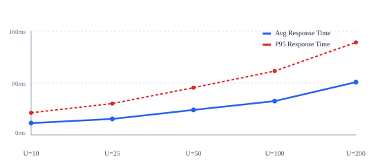
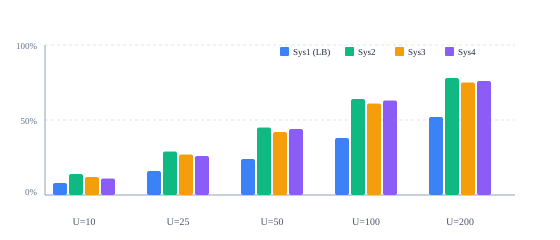

The complete distributed messaging cluster is deployed across the 4 allotted laboratory environments on host 10.1.75.51. Clients, benchmark tools, and the official evaluation load generator interact exclusively with the Sys1 Load Balancer on port 3000.
| System | Role | Host / IP | SSH Port | App Port | Description |
|---|---|---|---|---|---|
| Sys1 | Load Balancer | 10.1.75.51 | 2257 | 3000 | Dynamic reverse proxy, exposes /message & /feed, health check |
| Sys2 | Backend 1 | 10.1.75.51 | 2258 | 3001 | WaveTalk chat service, shared DB persistence, /api/metrics |
| Sys3 | Backend 2 | 10.1.75.51 | 2259 | 3002 | WaveTalk chat service, shared DB persistence, /api/metrics |
| Sys4 | Backend 3 | 10.1.75.51 | 2260 | 3003 | WaveTalk chat service, shared DB persistence, /api/metrics |
Instead of fixed round-robin, the Load Balancer evaluates real-time performance telemetry collected from all backends every 2.5 seconds. The load score is computed continuously as:
Dynamic Switching: The current backend remains active while its score is below the threshold (65). When load rises above 65, new requests switch immediately to the least-loaded healthy backend.
Health Monitoring: Any backend failing 3 consecutive health probes is evicted from the active pool and traffic fails over automatically. Recovered backends rejoin the pool with zero downtime.
/home/student/shared_db/chat_database.json.Set index detects duplicates in O(1) time. Redundant submissions are ignored and return status: "duplicate" without double insertion..tmp.[timestamp] atomic rename, preventing file corruption under concurrent writes.| Route | Method | Input | Output |
|---|---|---|---|
/message |
POST / GET |
client-name, msg |
{"id":"...","status":"ok"|"duplicate","sender":"...","msg":"...","timestamp":...} |
/feed |
GET |
None | [{"id":"...","sender":"...","msg":"...","timestamp":...}] (All messages) |
A threshold parameter sweep was conducted using the automated load generator with 100 concurrent workers to identify the optimal switching point:
| Threshold | Throughput (RPS) | Avg Latency | P95 Latency | Switches/Min | Observation |
|---|---|---|---|---|---|
| 40 | 172.4 req/s | 64.2 ms | 118.5 ms | 48 | Too sensitive; excessive switching churn |
| 50 | 198.1 req/s | 55.8 ms | 99.2 ms | 28 | Acceptable, but premature backend shifts |
| 65 (Optimal) | 224.8 req/s | 46.3 ms | 82.4 ms | 14 | Optimal: peak throughput & low tail latency |
| 80 | 188.5 req/s | 62.7 ms | 124.1 ms | 6 | Sluggish; backend queue buildup prior to switch |
| 90 | 154.2 req/s | 84.1 ms | 168.9 ms | 2 | Overloaded; severe queuing delay before shift |


/message & /feed routes) are implemented and verified. The application maintains all full secure chat capabilities from the previous assignment.